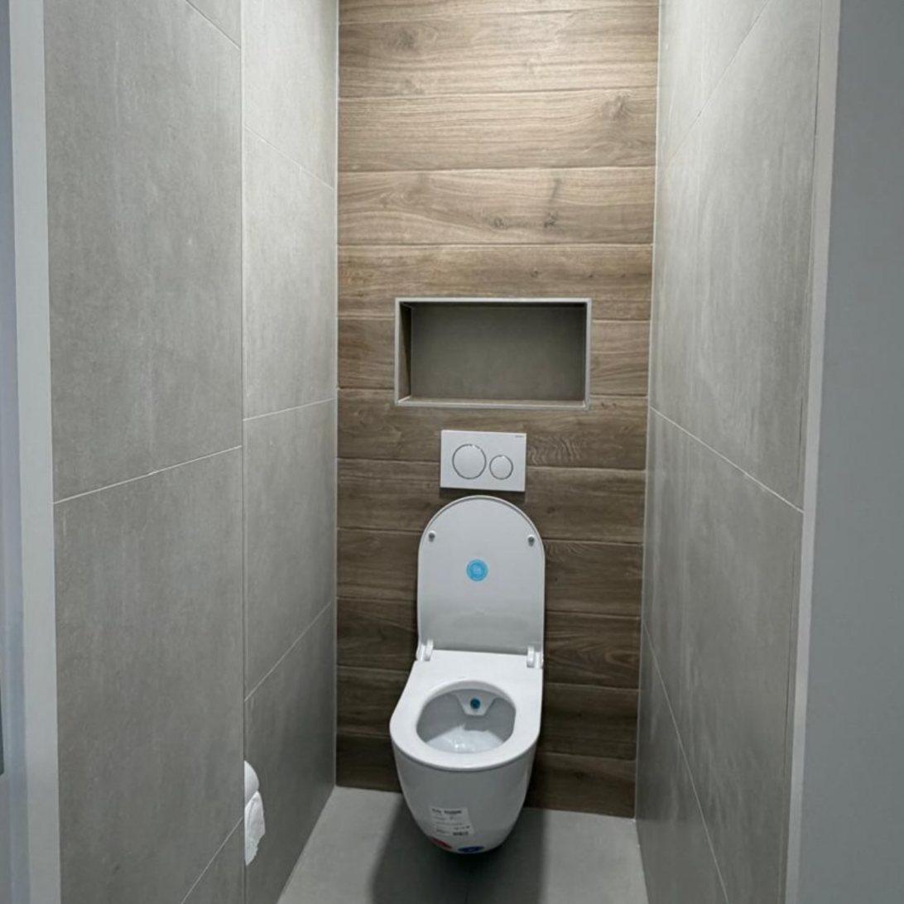
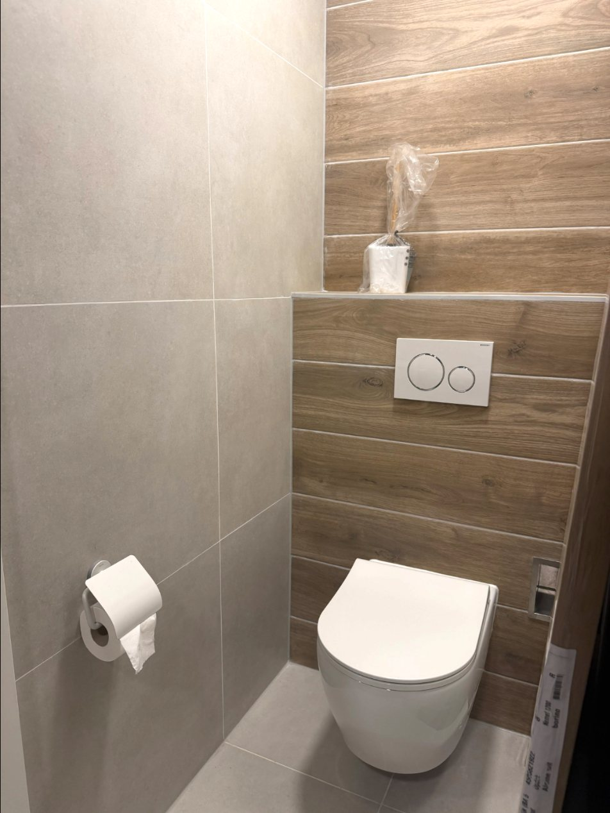

Een selectie uit het werk dat HT Klussenbedrijf zelf op Instagram deelt. Klik op een foto om te vergroten.


Stuur een bericht en vertel wat je wilt laten doen. Foto’s helpen om het snel te kunnen beoordelen.